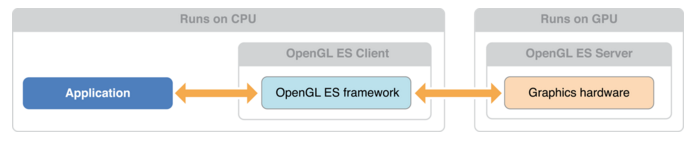

About OpenGL ES
OpenGL ES Programming Guide for iOS
About OpenGL ES
The Open Graphics Library (OpenGL) is used for visualizing 2D and 3D data.
OpenGL for Embedded Systems (OpenGL ES) is a simplified version of OpenGL

Drawing with OpenGL ES and GLKit

Swift 특징
Main 함수가존재하지 않습니다.
Swift 특징
문장끝을나타내는세미콜론(;)은선택사항입니다.
Swift 특징
변수와 상수를 선언하는 새로운 키워드가도입되었고, 형식추론을 지원합니다.
var name: String= "James"
let max = 100
Swift 특징
변수나 상수의이름에서유니코드문자를자유롭게사용할수있습니다.
Swift 특징
문자열과문자는모두큰따옴표를사용해서표현합니다.
var str = "string"
var char:Character = "c"
Swift 특징
확장 가능한 새로운 이름의 자료형을 제공합니다.(Extention)
Swift 특징
헤더파일이 사라지고 하나의 swift 파일에 선언과 구현을 모두 작성합니다.
Swift 특징
서브스크립트 문법을 다양한 자료형에서 사용할 수 있습니다.
class MyClass{
let data= ["iPhone", "iPad", "iPod", "Mac Pro"]
subscript(index: Int) -> String{
return data[index]
}
}
var myClass = MyClass()
var firstProduct = myClass[0]
Swift 특징
구조체와 열거형의 기능이 확장되었습니다.
Swift 특징
"값이없음" 을 나타내는 새로운 방법을 제공합니다.
var userName: String? = ....
if let userName = ....{
}
Control Flow
while, do-while
var n = 2
while n < 100 {
n = n * 2
}
print(n)
var m = 2
repeat {
m = m * 2
} while m < 100
print(m)
Control Flow
for range
var firstForLoop = 0
for i in 0..<4 {
firstForLoop += i
}
print(firstForLoop)
var secondForLoop = 0
for var i = 0; i < 4; ++i {
secondForLoop += i
}
print(secondForLoop)
참고자료
https://developer.apple.com/library/ios/documentation/Swift/Conceptual/Swift_Programming_Language/index.html
http://swift.leantra.kr/
Using Swift with Cocoa and Objective-C
Importing Objective-C into Swift
Objective-C ->Swift : -Bridging-Header.h"
Swift -> ObjectiveC : #import "ProductModuleName-Swift.h"